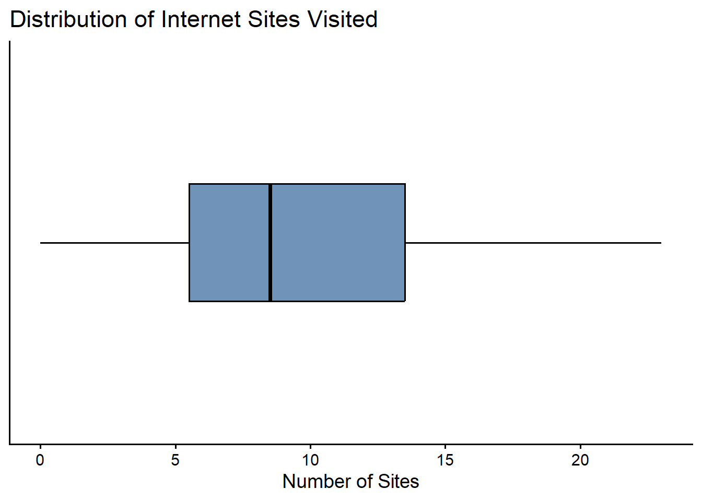
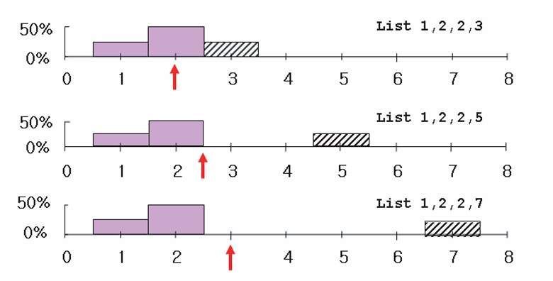

3 Numerical Summaries
NoteLearning objectives
By the end of this chapter, you should be able to:
- explain the purpose of numerical summaries in descriptive statistics,
- distinguish between different measures of central location,
- describe how dispersion captures variability in data,
- compute and interpret the mean, median, and standard deviation,
- explain the difference between population and sample standard deviation,
- interpret percentiles and quartiles as measures of relative standing.
Descriptive statistics consist not only of graphical summaries, but also of numerical methods.
Since we introduced the histogram in the previous chapter—the most important graphical summary of data—we now turn to basic numerical descriptive statistics.
These include:
- Measures of central location, such as the mean, median, and mode
- Measures of dispersion (or spread), such as the range, variance, standard deviation, and coefficient of variation
- Measures of relative standing, such as percentiles and quartiles
Together, these numerical summaries help us describe data in a concise and informative way.
NoteBig picture
Numerical summaries allow us to describe large datasets using just a few carefully chosen numbers.
3.1 Measure of central location
The arithmetic mean (or simply, the average) is the most widely used measure of central location. It is calculated by adding up all observed values and dividing by the number of observations.
\[ \overline{X} = \frac{1}{n} \sum_{i=1}^{n} X_i \tag{3.1}\]
The arithmetic mean, shown formally as Equation 3.1, is unique. Moreover, it has an important and intuitive property: the sum of the deviations of each observation from the mean is zero.
An interesting way to visualize this property is through a histogram. If the histogram were placed on a balance, it would balance exactly when supported at the arithmetic mean.

The median, another measure of central location, is the midpoint of the values in a dataset once the observations are ordered from the smallest to the largest.
The mode is a less commonly used measure of central location and refers to the value that occurs most frequently in the data.
An important advantage of the median is that it is not affected by extremely large or small values. For this reason, it is often a more reliable measure of central location when such extreme values are present.
The mode, on the other hand, can be interpreted as the “fashion category” of the data. In a histogram, it corresponds to the tallest bar or the highest peak.
ImportantKey idea
The mean, median, and mode summarize the center of the data, but they respond differently to extreme values.
For symmetrical histograms, such as the Gaussian (normal) distribution, the three measures coincide:
\[ \text{mean} = \text{median} = \text{mode}. \]

But not all histograms are symmetric. If a histogram is skewed to the left or to the right, the three measures may differ.

What is important to realize is that extreme values affect the average most, then the median, and least the mode. The arithmetic mean is therefore the most sensitive to extremely large or small values.
WarningCommon pitfall
Relying only on the mean can be misleading when the data contain extreme values or are highly skewed.
3.2 Measures of dispersion or spread

The three histograms above all have the same average (or mean), yet they clearly look different. Describing a distribution using only its mean is therefore not sufficient. We also need to know how spread out the data are—that is, the dispersion or variability of the observations.
There are many measures of dispersion, including the range, the mean absolute deviation, the root mean square (r.m.s.), the standard deviation, the variance, the coefficient of variation, and the interquartile range. We now focus on the most important of these.
3.2.1 The standard deviation
The standard deviation, abbreviated as SD, is the most important measure of dispersion used in this book. There are several ways to define and compute it, but the most intuitive approach is based on the idea of the root mean square (r.m.s.).
The starting point is the notion of a deviation, which is simply the distance of an observation from the average. Mathematically, the deviation of an observation (\(X_i\)) from the mean (\(\overline{X}\)) is
\[ \text{deviation} = X_i - \overline{X}. \]
The term root mean square is a useful reminder of the steps involved—provided one reads it backwards:
- Square all the entries
- Take the mean of the squares
- Take the square root of the mean
In equation form, the root mean square of a variable \(X\) can be written as
\[ \text{r.m.s. of } X = \sqrt{X^2}. \]
This, however, is just a mathematical operation.
The standard deviation is defined more specifically as the root mean square of the deviations from the mean, that is,
\[ \text{SD of } X = \text{r.m.s. (deviation from the average)}. \]
In simple terms, the standard deviation tells us how far, on average, the observations lie from their mean.
3.2.2 A numerical example
To make this concrete, consider the list of numbers
\[ 20,\; 10,\; 15,\; 15. \]
The average \(\overline{X}\) is 15. The deviations from the mean are therefore
\[ 5,\; -5,\; 0,\; 0. \]
Applying the r.m.s. procedure gives the standard deviation:
\[ \begin{aligned} \text{SD} &= \sqrt{\frac{5^2 + (-5)^2 + 0^2 + 0^2}{4}} \\ &= \sqrt{\frac{25 + 25 + 0 + 0}{4}} \\ &= \sqrt{\frac{50}{4}} = \sqrt{12.5} \approx 3.5. \end{aligned} \]
TipTry This: Exploring Mean and SD
Part 1: Shifting and Scaling
Find the mean and standard deviation (SD) for the following lists:
(i) \(1, 3, 4, 5, 7\) (ii) \(6, 8, 9, 10, 12\) (iii) \(3, 9, 12, 15, 21\)
Question: What do you notice about how the mean and SD change across these three lists?
Part 2: Symmetry and Signs
Find the mean and SD for these two lists:
(i) \(5, -4, 3, -1, 7\) (ii) \(-5, 4, -3, 1, -7\)
- Adding a constant to a list does not change the standard deviation.
- Multiplying a list by some constant \(k\) multiplies the standard deviation by \(k\)
- Changing each sign of elements in a list does not change teh standard deviation
3.2.3 Population and sample standard deviation
It is important to distinguish between the population standard deviation and the sample standard deviation, although this distinction becomes more relevant in statistical inference.
When computing the population standard deviation, we divide by \(n\), the number of observations:
\[ \text{SD} = \sqrt{\frac{\sum (X - \overline{X})^2}{n}} \tag{3.2}\]
When computing the standard deviation of a sample, we divide by \((n - 1)\):
\[ \text{SD}^+ = \sqrt{\frac{\sum (X - \overline{X})^2}{n - 1}} \tag{3.3}\]
We use \(\text{SD}^+\) to denote the sample standard deviation. It is numerically larger than \(\text{SD}\) because we divide by the smaller number \((n - 1)\) rather than \(n\).1
3.2.4 Variance and the coefficient of variation
Another measure of dispersion is the variance, which is simply the square of the standard deviation. While the standard deviation is measured in the same units as the data, the variance is measured in squared units, making interpretation less direct.2
Comparing variability across variables measured in different units is often difficult. A relative measure of dispersion, known as the coefficient of variation (CV), is sometimes used. The CV is defined as the ratio of the standard deviation to the mean, expressed as a percentage.
3.3 Measures of relative standing
ImportantKey idea
Measures of relative standing tell us where an observation lies within a distribution, not just its magnitude.
3.3.1 Percentiles and Quartiles
There are two important and closely related measures of relative standing:
- Percentiles
- Quartiles
The \(p\)th percentile is the value for which \(p\%\) of the observations are less than (or equal to) that value and \((100 - p)\%\) are greater than (or equal to) that value.
For example:
- The 100th percentile is the maximum value (since 100% of observations are below or equal to it).
- The 50th percentile is the median, the value that splits the data in half.
- The 25th percentile and 75th percentile are called the first quartile (\(Q_1\)) and third quartile (\(Q_3\)), respectively.
3.3.2 Locating a Percentile
Given an ordered dataset of size \(n\), the location of the \(p\)th percentile can be found using:
\[ L_p = (1 + n)\frac{p}{100} \]
where:
- \(n\) = number of observations
- \(p\) = desired percentile
If \(L_p\) is not an integer, interpolate between the surrounding observations.
3.3.3 Example
Consider the ordered dataset:
\[ \{0, 1, 5, 7, 8, 9, 12, 14, 22, 23\} \]
This represents the number of internet sites visited by 10 students.
Here, \(n = 10\).
First Quartile (\(Q_1\))
To find the 25th percentile:
\[ L_{25} = (10 + 1)\frac{25}{100} = 2.75 \]
This means the 25th percentile lies 0.75 of the way between the 2nd and 3rd observations.
- 2nd observation = 1
- 3rd observation = 5
Interpolate:
\[ Q_1 = 1 + 0.75(5 - 1) = 1 + 3 = 4 \]
Median (\(Q_2\))
The 50th percentile:
\[ L_{50} = (10 + 1)\frac{50}{100} = 5.5 \]
This lies halfway between the 5th and 6th observations:
- 5th value = 8
- 6th value = 9
So,
\[ Q_2 = 8.5 \]
Third Quartile (\(Q_3\))
The 75th percentile:
\[ L_{75} = (10 + 1)\frac{75}{100} = 8.25 \]
This lies 0.25 of the way between the 8th and 9th observations:
- 8th value = 14
- 9th value = 22
So,
\[ Q_3 = 14 + 0.25(22 - 14) = 14 + 2 = 16 \]
3.3.4 Interquartile Range (IQR)
The interquartile range measures the spread of the middle 50% of the data and is defined as
\[ IQR = Q_3 - Q_1. \]
Using our results:
\[ IQR = 16 - 4 = 12. \]
This means that the central half of the observations lie within a range of 12 units.
4 The Box Plot
A box plot is a graphical summary of data based on quartiles.
To construct a box plot, we need five values:
- Minimum
- First quartile (\(Q_1\))
- Median (\(Q_2\))
- Third quartile (\(Q_3\))
- Maximum
These five numbers form the five-number summary.
For our numerical example above, we have:
ImportantChapter summary
Numerical summaries allow us to describe key features of a dataset using a small number of carefully chosen statistics.
Measures of central location describe where the data are centered, while measures of dispersion describe how spread out the observations are. Measures of relative standing indicate how individual observations compare with the rest of the data.
Together, these tools form the foundation for understanding data and prepare us for statistical inference in later chapters.
4.1 Exercises
4.1.1 Conceptual questions
Explain why the mean alone is often insufficient to describe a dataset.
Compare the mean, median, and mode.
In what situations might one be preferred over the others?Why is the median often a better measure of central location than the mean when data contain extreme values?
Explain why two datasets can have the same mean but very different standard deviations.
NoteCheck your understanding
If two datasets have the same mean and median, must they have the same standard deviation? Explain.
4.1.2 Understanding dispersion
Describe in words what the standard deviation measures.
Why is it based on deviations from the mean rather than deviations from the median?Explain the role of the root mean square (r.m.s.) in defining the standard deviation.
Which has larger r.m.s? the list \(7,7,7,7\) or \(7,-7,7,-7\)?
What is the r.m.s of \(17,17,17,17,17\)? What is the SD?
Can the SD ever be negative?
For a list of positive numbers, can the SD ever be larger than the average?
Why does the variance have squared units, and why can this make interpretation difficult?
WarningCommon pitfall
A small standard deviation does not imply that the data are “small”—only that they are tightly clustered around the mean.
4.1.3 Measures of relative standing
Explain what it means for a value to be at the 75th percentile of a distribution.
Why is the median equal to the 50th percentile?
Describe how a box plot summarizes information about central location, dispersion, and relative standing.
4.1.4 Numerical practice
- Consider the dataset: \[ 5,\; 8,\; 2,\; 9,\; 5,\; 3,\; 7,\; 4,\; 2,\; 7,\; 4,\; 10,\; 4,\; 3,\; 5. \]
- Compute the mean, median, and mode.
- Compute the standard deviation, SD and variance.
- Explain what each statistic tells you about the data.
- Calculate their 25th and 75th percentiles.
- Find the inter-quartile range (IQR).
- Calculate the coefficient of variation for the two lists.
- What is the mean absolute deviation for both lists?
- Draw a boxplot for the lists of numbers.
4.1.5 Optional challenge
- Find a real dataset (for example, income, test scores, or prices):
- compute at least two measures of central location,
- compute at least one measure of dispersion,
- explain which statistics are most informative and why.
This is for notional purposes only. Although it may seem counterintuitive, this adjustment corrects for the fact that samples tend to underestimate population variability.↩︎
Variances are especially useful in algebraic manipulations. For example, variances can be added, whereas standard deviations cannot.↩︎